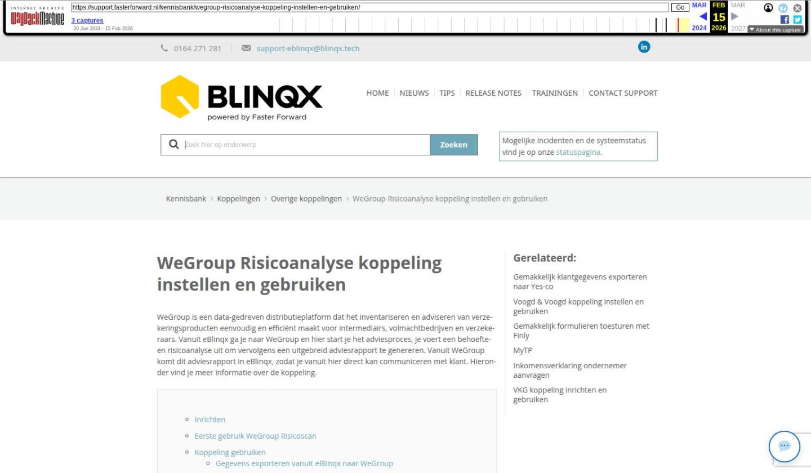

WeGroup Risicoanalyse koppeling instellen en gebruiken

Tekstinhoud
WeGroup Risicoanalyse koppeling instellen en gebruiken | Support
---
WeGroup Risicoanalyse koppeling instellen en gebruiken
WeGroup is een data-gedreven distributieplatform dat het inventariseren en adviseren van verzekeringsproducten eenvoudig en efficiënt maakt voor intermediairs, volmachtbedrijven en verzekeraars. Vanuit eBlinqx ga je naar WeGroup en hier start je het adviesproces, je voert een behoefte- en risicoanalyse uit om vervolgens een uitgebreid adviesrapport te genereren. Vanuit WeGroup komt dit adviesrapport in eBlinqx, zodat je vanuit hier direct kan communiceren met klant. Hieronder vind je meer informatie over de koppeling.
Inrichten
Eerste gebruik WeGroup Risicoscan
Koppeling gebruiken
Gegevens exporteren vanuit eBlinqx naar WeGroup
Risicoscan uitvoeren
Adviesrapport opmaken
Adviesrapport exporteren naar eBlinqx
Adviesrapport versturen naar jouw klant
Taak aanmaken
Inrichten
Voor het gebruik van de WeGroup Risicoanalyse koppeling moet je een contract hebben bij WeGroup. Neem hiervoor contact op met WeGroup. WeGroup stuurt een e-mail naar ons met het verzoek de koppeling in te richten. Wij richten de koppeling verder voor je in.
Eerste gebruik WeGroup Risicoscan
Wanneer de koppeling is ingericht verschijnt onder het klantdossier – tabblad Export het tabblad Risicoscan | WeGroup. Hier klik je op. Eenmalig dien je jezelf te authentiseren onder deze tab. Dit doe je met de inloggegevens die door WeGroup zijn verstrekt. Dit zijn dus niet de inloggegevens van eBlinqx.
Koppeling gebruiken
Gegevens exporteren vanuit eBlinqx naar WeGroup
Via het tabblad Export – Risicoscan | WeGroup exporteer je de klant naar WeGroup. Hier kan je eerst de gegevens selecteren en vervolgens klik je op de knop 'Exporteer'.
De polis- en klantgegevens vanuit eBlinqx worden geëxporteerd naar WeGroup.
Risicoscan uitvoeren
In WeGroup wordt een gesprek opgestart. In dit gesprek vul je allerlei gegevens in, waaronder bijvoorbeeld de bedrijfsgegevens, activiteiten, panden en voertuigen. Het gesprek betreft de analyse van de situatie.
Adviesrapport opmaken
Nadat het gesprek/de risicoanalyse is afgerond, krijg je verschillende mogelijkheden. Je kunt direct een adviesrapport aanmaken, het gesprek versturen naar de klant of het gesprek bekijken.
Wanneer je het gesprek bekijkt, zie je onder andere de vragen en antwoorden terug en de aanbevelingen. Vanuit de aanbevelingen ga je aan de slag om het adviesrapport te openen en verder in te vullen.
Adviesrapport exporteren naar eBlinqx
Wanneer je het adviesrapport volledig hebt ingevuld kan je de keus maken om deze te exporteren als PDF, exporteren als Word, exporteren naar CRM/assurantiepakket of per e-mail te versturen.
Om het adviesrapport te versturen naar eBlinqx kies je voor 'Exporteren naar CRM/assurantiepakket'. Er verschijnt een pop-up waar je Faster Forward dient te kiezen en vervolgens kunt klikken op 'Rapport exporteren'.
Om direct naar eBlinqx te gaan klik je op 'Externe referentie'.
Adviesrapport versturen naar jouw klant
Wanneer je op 'Externe referentie' hebt geklikt, kom je uit op het tabblad Communicatie – E-mail in het klantdossier. Hier kan je jouw e-mail verder opstellen. Je kunt hiervoor de standaardteksten Wegroup – Adviesrapport versturen naar klant | Particulieren of Wegroup – Adviesrapport versturen naar klant | Zakelijk gebruiken. Staan deze nog niet op jouw omgeving stuur dan een e-mail naar support-eblinqx@blinqx.tech.
Let op: het adviesrapport is onder het tabblad Documenten in het klantdossier gezet. Je dient deze handmatig toe te voegen als bijlage in de e-mail.
Taak aanmaken
Indien gewenst kan er een workflow ingericht worden die reageert op het exporteren van het adviesrapport. Vanuit de workflow kan bijvoorbeeld een taak aangemaakt worden om je te attenderen op het onderhoudsgesprek naar aanleiding van dit adviesrapport.
Laatste update: 15 oktober 2025
Was deze informatie nuttig?
Ja Nee